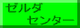
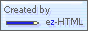

Neo's World の歴代デザイン
メインサイト Neo's World の歴代デザインを、当時の HTML・CSS・JavaScript のまま再公開。
2002-11-23 (スクリーンショット)
2004年頃に Archive.org より取得したスクリーンショットを、Archive.org より再取得。
始まって1ヶ月頃。トップとして機能するようになったページ。英語を多用し、Comic Sans MS をタイトルに使用している。ポケモンニュースという埋め込みオブジェクトがある。当時から XREA のカウンタを利用しているが、この頃はまだデザインが違う。
2002-11-29 (スクリーンショット)
2004年頃に Archive.org より取得したスクリーンショットを、Archive.org より再取得。
上のアーカイブから1週間しか経っていないが、全面改装したところらしい。トップに Flash があったようだ。
2003-01-08 (スクリーンショット)
2004年頃に Archive.org より取得したスクリーンショットを、Archive.org より再取得。
英語のメニューにはまっている頃。スタイルシートを使い始めた。border を立体風にしていたり、スクロールバーの CSS が懐かしい。
2003-01-24 (スクリーンショット)
2004年頃に Archive.org より取得したスクリーンショットを、Archive.org より再取得。
青がサイトのカラーになってきた頃。メニューが長くなった。インラインフレームを使うようになっている。
2003-06-26
当時の一コンテンツだった「ゼルダセンター」のトップページのみ。Shift-JIS・CRLF だったものを UTF-8・LF に修正し、広告コードを修正した以外は当時のまま。
「ポケモン熱狂的ファンはココが違う！」のコンテンツページのデザインを参考に実装したモノ。デザイン作成時はホームページビルダーが自動生成したコードをベースに、見よう見まねで HTML や CSS を手修正していた。コンテンツ作成時はホームページビルダーの WYSIWYG な編集画面で入力していた。だからタグを手打ちした部分と WYSIWYG で操作した部分とで、コードの改行のされ方が違ったりしている。
HTML はほとんどを大文字で表記している。多分コレもホームページビルダーが生成したコードが大文字だったから真似していただけだと思う。CSS は圧縮して書いた方が良いとどこかで見聞きしたのか、セレクタごとに1行にまとめて書いてある。命名規則も何もあったもんじゃない。
br もガンガン使うし、この後どんどん div 厨になっていくのだが、ココではまだ font 要素が使われているところで懐かしさ爆発。
この「ゼルダセンター」というコンテンツは、小学校時代の友達と共同で作っていたと記憶している。というのも、僕はゼル伝シリーズを一つもプレイしたことがなく、何の思い入れもなかったのだが、友人がゼルダ好きで、彼の代わりにサイト作成をしていた感じだ。すぐに友達の方が飽きてしまい、短期間で終了したコンテンツだ。当時のバナーがサルベージできたので載せておく。
- 
2003年6月というと、中学1年になったばかり。このサイトとしては開設から1年経っていないぐらいだ。
2004-02-23 (スクリーンショット)
2004年頃に Archive.org より取得したスクリーンショットを、Archive.org より再取得。
このトップデザインは長かったと思う。2004-04-02 と同じデザイン。スクショを撮った時が何気にキリ番。上部に写り込んでいるのは IE6 を F11 キーで全画面表示にした時のメニューバーと思われる。
2004-04-02
トップページのみ。リンク先ページは存在しない。Shift-JIS・CRLF を UTF-8・LF に変更し、広告コードを修正。
Archive.org からサルベージ。サイト名のアポストロフィが全角なのは、勝手に変換されたのか、当時からそうしていたのか忘れた。
HPCSS.CSS の内容はほぼ変わっていないようだ。フォントサイズを 10pt とか 12px とかにするのが流行っていた時代。トップページだけはちょっとデザインに凝っていて、専用のスタイルを当てている。
全体的なカラムレイアウトはテーブルを使っている。左メニューの見出しが枠から半分飛び出たようなデザインになっているが、ココも涙ぐましいテーブルレイアウトで実現している。
右側コンテンツ部分の見出しの枠線も多少凝っていたつもり。font 要素や br 要素を多用していて、大変自由にコーディングしている。
ポケモン攻略サイトとしてまだ力をいれていた時期で、当時はファイアレッド・リーフグリーンの攻略コンテンツを更新していた。火炎蜥蜴さんの「Pokemonist」というサイトと提携し始めたようだが、具体的に何を提携していたかは覚えていない。
ファビコンを付け始めたが、MS ペイントで作ったダサい ICO ファイルだ。大文字・小文字の統一感もないし、HTML ソースの汚さとかマジで気にしていなかったみたい。当時ですでに今更感があったが、「こどもホームページランキング」に登録したりしていて謎。
2004年4月というと、中学2年になったばかり。2003年11月に引越して、長野の中学に慣れずずっと死にたいと思っていたが、少しずつ復活してきた頃。
2004-06-11
トップページのみ。リンク先ページは存在しない。Shift-JIS・CRLF を UTF-8・LF に変更。
何やら JavaScript を2つ読み込んでいる。document.write() を使って、全ページに共通のヘッダとフッタを適用しているようだ。このあとしばらくすると、PHP を使って Include し始めるのだが、この頃から「テンプレート化」みたいなことを自前でやろうとしていたようだ。
ヘッダ用 JS の 0.js は、なぜか広告コードをコメントアウトしていて、何の効果もなし。
フッタ用 JS の 1.js からは、a.html を iframe で挿入していて、左カラムのメニューにしているようだ。かなりの荒業。IE6 など当時のブラウザではきちんと2カラムに見えていたようだが、2019年現在の Chrome で見ると段組が崩れている。iframe が width: 100% なのがいけなさそうだ。
フルーツメールや CM サイトのバナー広告を貼り始めている。お小遣い稼ぎを再開していた様子。ホントこの頃はコロコロデザインを変えまくっていた。0.css 冒頭の自作 AA がウザいｗ
2005-09-04
トップページのみ。Shift-JIS・CRLF を UTF-8・LF に変更し、広告コードを修正。
Archive.org からサルベージしたデータだと思うのだが、デザインが当時のモノか怪しい。ローカルでファイルをゴソゴソ移動しまくっていて、何がオリジナルデータだか分からなくなってきた。HTML 内に style 要素で埋め込んでいる CSS を見ると K&R スタイル風にインデントしてあるし、CSS Reset をしている。当時こんなこと覚えてたっけかなぁ…？
title 要素に記載のサイト名が、懐かしの罫線記号付き。「╋━━ Neo's World ━━╋」という表記はよく使っていた。2004・5年ぐらいまではポケモンサイトとして力を入れていたので、ポケモンサイト系のランキングサイトやウェブリングに参加しまくっていた。HTML がキレイな1スペースインデントになっているのを見ると、HTML4.01 Strict に目覚めた後なのかな？
「準備中」とかいってデザインをショボくしていたのはどういう理由なんだろう？忘れた。
2005年9月というと、中学3年の夏休み明けぐらいか。横浜に住処を移して、肺炎が完治した頃だろう。
2005-10-25
トップページのみ。Shift-JIS・CRLF を UTF-8・LF に変更し、広告コードを修正。
HTML は1スペースインデント、CSS は K&R スタイル風で終了ブレースもインデントする形式。全ページを PHP で作るように変更した頃。PHP にしたのは、ヘッダとフッタを共通化するために Include を使いたかっただけ。
まぁまぁ大掛かりな CSS を書くようになってきた。コンテンツ全体を囲む罫線のために PNG 画像を使っている。1x1px の画像を繰り返し表示すると IE で表示がバグる、みたいなのをどこかで読んだので、1px でも足りるところ、2px は最低持つようにしている。効果はあったのだろうか。
色々な HTML・CSS 系サイトを見て勉強していた頃と思われ、js.js はどこかからパクってきたコードが散見される。空の td 要素に empty-cells: show が効かなかった頃のフォールバックや、abbr と acronym が混在していた頃のフォールバック、q 要素の対応など。
この頃のデザインはまぁまぁ気に入っていて、以降何度か手直しを入れつつ、長く使っていた。
2006-08-16
トップページ、ポケモンフリーク、マリオランド、エボリューションのトップページのみ。Shift-JIS・CRLF を UTF-8・LF に変更し、広告コードを修正。リンクパスを一部修正。
このアーカイブのみ、複数の時点のアーカイブが混在しているので、少し補足。
の2ページについては、「2005-10-25」と同じデザインで表示される、少し古いページ。
の2ページについては、より新しいデザイン。HTML も異なる。
2002〜2004年頃のどこかで、ページ右下に夕焼け空の画像が固定配置されたキレイなサイトを見た記憶があったのだが、そのページに辿り着けず、想像だけで再現してみたレイアウトだ。画像は自分が2003年10月に撮影した画像を加工して利用している。
ポケモンフリークとエボリューションのページで確認できるが、当時は「ホームページビルダー」に付属の「ウェブアートデザイナー」を使って、サイトのバナー画像を作っていた。neodevice.com というサイトがあって、沢山のサブサイトを作るのがカッコイイと思っていたので、バナーもコンテンツごとに作ったりしていた。
2006年8月というと、高校1年の夏休みぐらいか。軽音楽部に入ってギターを始めて、ココから徐々にサイトの更新頻度が少なくなっていく。
2008-07-30
トップページのみ。リンク先は全て存在しない。当時は HTML・CSS ともに Shift-JIS エンコーディングだったが、全て UTF-8 に変更し、CR+LF を LF に変更。XREA の広告コードを本保管庫のモノに変更し、当時登録していたお小遣い稼ぎサイトの広告類は全てコメントアウトした。それ以外は当時のまま。
- : Random
- : Liquid PnB
- : Pink & Blue
- : Emo
- : Dark Trail
- : Sunset
- : Rarotongan
という7つの CSS テーマを切り替えられるようになっている。CSS 切替スクリプト csskks.js は「曉に死す」で配布されていたモノを使用していたが、2019年7月現在の Chrome で一箇所エラーが出たため、そこだけ修正して動くように直している。
2005〜2006年頃はまぁまぁ CSS をイジれるようになってきていて、当時は画像を使わないデザインに凝っていたが、ある時「やっぱ画像使った方が見た目良いよね」と方針転換。2006年8月に公開した「Rarotongan」テーマを皮切りに、2008年4月公開の「Random」テーマに至るまで、画像を使用したデザインになっている。Photoshop も使い始めの頃かなぁ。
この7つの CSS テーマは、共通の CSS style_common.css で体裁を整えている。文章など中身はこの共通 CSS で揃えておいて、全体の段組や見出しなんかを個別のテーマでイジってる、って感じかな。
当時は「イカした CSS サイト」を紹介するサイトが多数あり、確か「CSS Beauty」とかいうサイト名だったかな？海外のサイトをよく見ていて、各テーマはそこで見たイイカンジのサイトたちを真似っ子したモノだと記憶している。
CSS は終了ブレース } もインデントする謎スタイルだが、タブインデントから2スペースになっている。HTML は1スペースだ。個人的には HTML4.01 Strict 全盛。
2008年というと高3、受験勉強中だ。一応代ゼミに通って勉強してはいたが、mixi に興じたりしていて結局遊んでいた時代。
2009-07-01
トップページのみ。リンク先は存在しない。Shift-JIS・CRLF から UTF-8・LF に変更し、XREA 広告コード周りを修正。
CSS のファイル名からするに、2008年9月9日に更新したテーマで、それ以前とは HTML 構造が少し異なっている。テーマ名は「Time Leap」で、JavaScript を組み合わせて閲覧時間帯によってカラーテーマが変わるように仕掛けてある。
@import 文のみを記述した CSS が中間に挟まるような構成になっているが、コレは当時、@import 文の書き方によってインポート先の CSS ファイルを読み込めるブラウザ・読み込めないブラウザが存在していたため。古いブラウザで CSS が適用されても、表示バグが多くてイマイチだろうと思ったので、IE4 などには CSS を読み込ませないような記法でインポートしている。
- hail2u.net - Complex @import rules … この情報を初めて知ったサイト。
- Neo's World - CSS デザインの定石 … この情報をまとめて書いた自分のページ。2007年頃に初版執筆。
2009年というと大学1年。色々なデザインを試してはいたが、新しい CSS プロパティを取り入れてもブラウザごとに対応状況がまちまちで、まだまだ奇抜なことをやるのが大変だった時代。
2009-07-19
デザインチェックのために用意していたトップページモドキのページのみ。リンク先は存在しない。Shift-JIS・CRLF から UTF-8・LF に変更し、XREA 広告コード周りを修正。
前回のテーマ「Time Leap」が2008年9月9日に作られたモノで、およそ10ヶ月ぶりにデザイン変更した様子。ピンクを基調としたスタイルで、「更新履歴」によるとテーマ名は「Pinky Princess」らしいのだが、CSS ファイルに記載のテーマ名が「Time Leap」のままだ。直し忘れている。
この頃は CSS のコロン : の前後にスペースを付けない方針。できるだけ3桁のカラーコードを使って、文字数を削減しようとしている。全称セレクタを使った簡易 CSS Reset もかませている。角丸なデザインをやりたくて、Photoshop でスプライト素材を作っていた。
2009-08-19
デザインチェックのために用意していたトップページモドキのページのみ。リンク先は存在しない。Shift-JIS・CRLF から UTF-8・LF に変更し、XREA 広告コード周りを修正。
2009年7月19日に公開した「Pinky Princess」のマイナーチェンジ。全体の幅を 780px から 940px に広げている。また、Google AdSense の広告コードを貼るエリアを追加している。CSS ファイルに記載のテーマ名はまだ「Time Leap」と直し忘れたまま。
デザイン変更のために全 HTML ファイルを一括置換する必要があったが、その時使用していたのは TextSS というフリーソフトだ。最近はほぼ使うことがなくなってきたが、長らく愛用している。
2014-09-05
当時のトップページのみ。Shift-JIS・CRLF から UTF-8・LF に変更し、XREA 広告コード周りを修正。
2009年に作った「Pinky Princess」をちょこちょこ微修正していたようだ。HTML 側はほぼ変わりなし。トップページにはトラフィックエクスチェンジ系の広告とか貼るようになってる。当時コレ系で PV 稼ぎながらお小遣い稼ぎもしていたなぁ。
メインメニューから「Web」が消えて、代わりに「Music」が登場している。一番最初は「ホームページエボリューション」と名付けた、「HP 作成支援」系のコンテンツがメインコンテンツだったが、この流れを見てもらえば分かるとおり、2007・8年頃には知識が更新されなくなっていたので、「Etc.」に降格した。その代わりに、2009年の大学入学以降ハマっていたギターやエフェクターの収集に関連した、機材紹介系のコンテンツをメインにした。
お小遣い稼ぎを狙って、「ネタバレシネマレビュー」「Jazz Fusion Music Reviews」「安ギター・安ベース紹介」というブログサイトを作っていたが、いずれも長続きはしなかった。安ギター漁りは自分がもう止めてしまったので復活しないだろうが、映画と音楽については El Mylar でちびちび書いている。
この日のアーカイブは、サイト全体を保存してあったのだが、コンテンツ的には現在とほとんど同じだったのでトップページぐらいしか残さなかった。ただ、以下のコンテンツは今ではお目にかからない、削除したコンテンツの一部なので、紹介しよう。
- 2014-09-05 - Neo's Google Search … Google 検索をインラインフレームで埋め込み、サイト内検索を提供していた様子。精度がイマイチかつ、デザインの調和が取れずにすぐ止めた記憶。
-  … ez-HTML というエディタを長らく使っていた。
- … Another HTML-Lint という HTML 構文チェッカーをよく使っていて、コレのせいで Strict 厨になった。
2014年というと、会社員になって2年目。新卒入社した当時の会社は、レガシーな社内システムを扱う SIer だったので、この頃もまだフロントエンド周りの知識はキャッチアップされていなかったようだが、Java、JavaScript をちょっとずつ書けるようになってきていた頃。
2016-01-12
当時のトップページのみ。Shift-JIS・CRLF から UTF-8・LF に変更し、XREA 広告コード周りを修正。
2009年から使い続けていた「Pinky Princess」をついに捨て、2014年9月5日頃に「Mewtwo777 Like」というテーマに変更したようだ。名前からお察しのとおり、「ポケモン熱狂的ファンはココが違う！」のコンテンツページのデザインを真似したモノだ。このデザインは2003年頃にも真似していたのだが、もう少し現代的にアレンジしている。
ココでようやく @import 文のみの CSS ファイルを捨て、直接読み込むようになった。また、終了ブレース } をインデントしなくなった。Java や JavaScript を覚えてきた影響だろう。
内容的には大して違いなし。Google Analytics を仕込み始めたくらいか。
2016年1月というと、技術ブログ Corredor を始めた頃。Atom エディタを触り始めていたが、このサイトの編集はまだ ez-HTML だったみたい。
2017-07-16
当時のトップページのみ。UTF-8 BOM・CRLF から UTF-8・LF に変更し、XREA 広告コード周りを修正。
テーマ名は「2016-02-12 Style」。名前からすると2016年2月にスタイル変更したようだ。HTML は BOM なし UTF-8 の CRLF、CSS は BOM あり UTF-8 の CRLF になっていて、Shift-JIS から卒業しているのが分かる。
HTML は1スペースインデントから2スペースインデントという2019年現在と同じスタイルに変わっている。HTML4.01 Strict とも決別し、HTML5 に移行している (だから Shift-JIS から UTF-8 にしたのかな)。meta 要素周りが特にスッキリしている。確か2015年モデルの13インチ MacBookPro に Atom エディタでリニューアル作業をしていたような気がする。
CSS 側は、reset.css という名のノーマライズ CSS を自作している。恐らく Normalize.css をベースに、自分のサイトで必要なモノにだけ削って調整しているみたい。拙作の Neo's Normalize に繋がっている。
Windows・Mac それぞれに標準搭載のシステムフォント内で、可能な限り差異をなくすよう、フォント指定にも凝り始めている。2017年2月に転職し、モダンフロントエンド開発にがっついていた頃なので、多分ちょこちょこ CSS にも手を加えていたんじゃないかな。
2023-12-08
当時のトップページと「スタイル検証用ページ」のみ。
2021年9月頃から2022年12月頃までは、ほぼ同等の HTML に、異なるスタイルを当てていた。コチラは 2023-01-08 頃に変更したモノで、テーマ名は「2023 Styles」。以前の「Mewtwo777 Like」と似た、ポケ熱風のデザインだ。